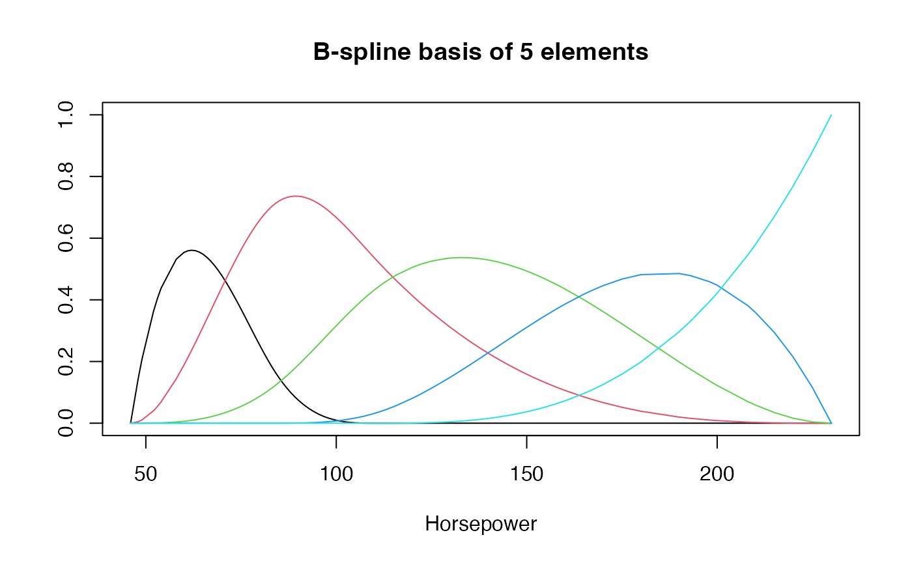
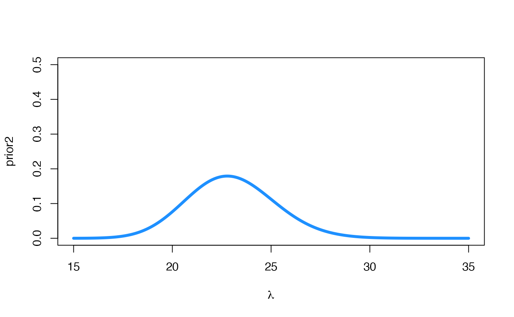
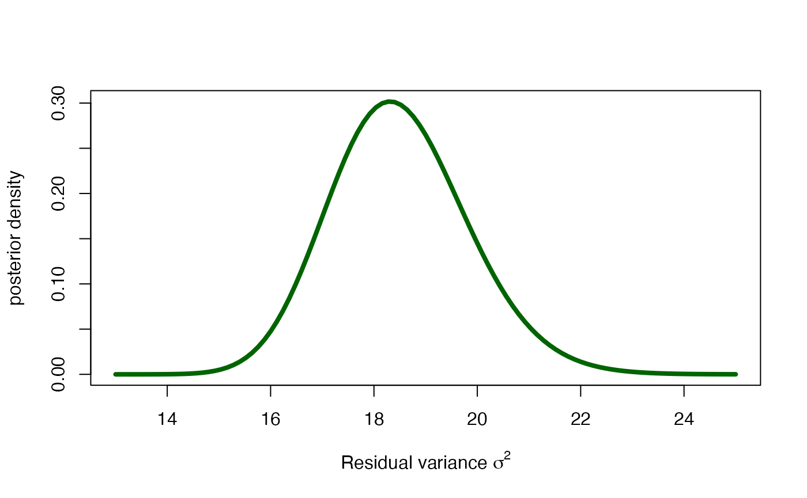
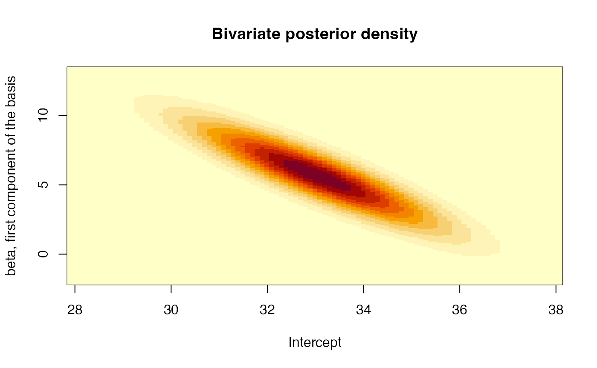
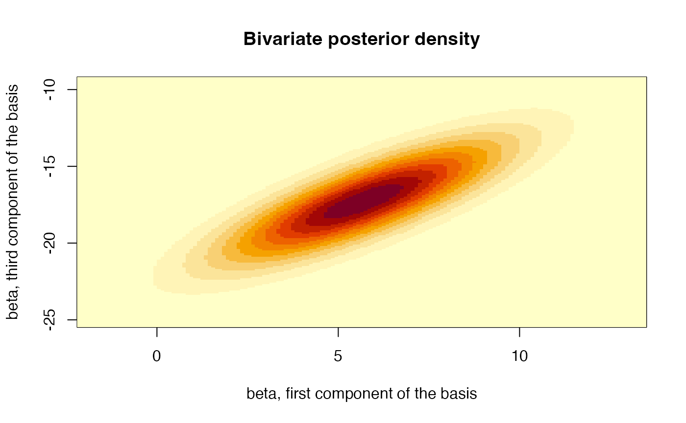

The Auto dataset of the ISLR library
contains information on several characteristics of 392 vehicles.
Specifically, we will want to model the relationship between the
efficiency of these cars, measured as the number of miles they are able
to travel per gallon of fuel (variable mpg), and their
power, quantified by the variable horsepower.
We begin by visualizing the relationship between the two variables
The relationship between both variables is clearly nonlinear, so we will fit a (Bayesian) spline regression model to this data set to describe this relationship. As we have already mentioned in the theory, spline models are just a particular case of linear models.
Spline regression models are linear models whose variables are the
elements of a basis of spline functions evaluated on each of the
individuals in the dataset. In our case, the explanatory variable with a
non linear relationship is horsepower. We define a basis of
spline functions (b-splines of degree 3) for this variable.
library(splines)
basis <- bs(Auto$horsepower, df = 5)
matplot(
sort(Auto$horsepower),
basis[order(Auto$horsepower), ],
type = 'l', lty = 1,
xlab = "Horsepower", ylab = "",
main = "B-spline basis of 5 elements"
)
A regression model with these functions would fit the complex
relationship between mpg and horsepower as a
linear combination of the 5 functions in this graph (and an intercept).
Let’s fit that relationship:
##
## Call:
## lm(formula = mpg ~ bs(horsepower, df = 5), data = Auto)
##
## Residuals:
## Min 1Q Median 3Q Max
## -15.7196 -2.6119 -0.2532 2.2002 15.3446
##
## Coefficients:
## Estimate Std. Error t value Pr(>|t|)
## (Intercept) 33.024 1.712 19.290 < 2e-16 ***
## bs(horsepower, df = 5)1 5.682 2.611 2.176 0.0301 *
## bs(horsepower, df = 5)2 -8.368 1.740 -4.810 2.17e-06 ***
## bs(horsepower, df = 5)3 -17.284 2.715 -6.366 5.53e-10 ***
## bs(horsepower, df = 5)4 -23.210 2.956 -7.852 4.10e-14 ***
## bs(horsepower, df = 5)5 -18.937 2.694 -7.029 9.49e-12 ***
## ---
## Signif. codes: 0 '***' 0.001 '**' 0.01 '*' 0.05 '.' 0.1 ' ' 1
##
## Residual standard error: 4.29 on 386 degrees of freedom
## Multiple R-squared: 0.7017, Adjusted R-squared: 0.6979
## F-statistic: 181.6 on 5 and 386 DF, p-value: < 2.2e-16
plot(mpg ~ horsepower, data = Auto)
lines(46:230, predict(Fit1, data.frame(horsepower = 46:230)),
col = 'red', lwd = 2)
The fitted curve adequately describes the relationship between both
variables. Moreover, all elements of the spline basis seem to have a
significant effect, that is, all of them are necessary to describe the
differences between the intercept (expected value for the lowest power)
and the mpgs for higher horsepowers.
Let us now fit the Bayesian version of the above model. We will use, for convenience, Jeffreys’ prior for \(\pi(\boldsymbol{\beta},\,\sigma^2)\propto \sigma^{-2}\). In that case, the posterior residual variance is: \[\sigma^2\mid \mathcal{D}\sim \text{IG}\Big(\sigma^2\mid\big((n-(p+1)\big)/2,\, s_e^2/2\Big),\] where \(n\) is the sample size, \(p\) is the number of model parameters and \(s_e^2\) is the sum of squared residuals.
library(LaplacesDemon)
curve(
dinvgamma(x, (nrow(Auto) - 6) / 2, sum(residuals(Fit1)^2) / 2),
col = "darkgreen", lwd = 4,
xlim = c(13, 25),
xlab = expression(paste("Residual variance ", sigma^2)),
ylab = 'posterior density'
)
This distribution yields a posterior mean of \((s^2_e/2)/((n-(p+1))/2-1)\) and a mode of \((s^2_e/2)/((n-(p+1))/2+1)\), that is:
data.frame(
Estimator = c('Posterior mean', 'Posterior mode', 'Maximum-likelihood'),
Value = c(sum(residuals(Fit1)^2)/2/((nrow(Auto)-6)/2-1),
sum(residuals(Fit1)^2)/2/((nrow(Auto)-6)/2+1),
sum(Fit1$residuals^2)/(nrow(Auto)-6)
)
) |>
knitr::kable(digits = 2)| Estimator | Value |
|---|---|
| Posterior mean | 18.50 |
| Posterior mode | 18.31 |
| Maximum-likelihood | 18.41 |
The posterior point estimates are quite close to the frequentist estimate, although the posterior distribution of \(\sigma^2\mid\mathcal{D}\) allows, in addition, to explore the uncertainty of this parameter.
As mentioned in the theoretical session, \(\boldsymbol{\beta}\) has the following
marginal posterior distribution: \[\pi(\boldsymbol{\beta}\mid \mathcal{D})\sim
t_{n-(p+1)}\Big(\hat{\boldsymbol{\beta}},\,s_e^2(\boldsymbol{X}'\boldsymbol{X})^{-1}/(n-(p+1)\Big)\]
The mean of this multivariate distribution coincides with the
coefficients of the linear model Fit1, and has as
variance-covariance matrix:
X <- cbind(rep(1, dim(basis)[1]), basis)
VarCov <- solve(t(X)%*%X)*sum(residuals(Fit1)^2)/(nrow(Auto)-6)
VarCov## 1 2 3 4 5
## 2.930920 -3.990558 -2.557275 -3.452341 -2.4105262 -3.1068632
## 1 -3.990558 6.816592 2.782554 5.738656 2.2225789 4.5917747
## 2 -2.557275 2.782554 3.026389 1.679175 3.5176276 2.2200446
## 3 -3.452341 5.738656 1.679175 7.372808 -1.0082916 5.0428402
## 4 -2.410526 2.222579 3.517628 -1.008292 8.7383010 -0.4500045
## 5 -3.106863 4.591775 2.220045 5.042840 -0.4500045 7.2588354
# Correlation between coefficients
cov2cor(VarCov)## 1 2 3 4 5
## 1.0000000 -0.8927874 -0.8586440 -0.7426690 -0.47631730 -0.67357610
## 1 -0.8927874 1.0000000 0.6126290 0.8094874 0.28797850 0.65277493
## 2 -0.8586440 0.6126290 1.0000000 0.3554817 0.68402820 0.47365908
## 3 -0.7426690 0.8094874 0.3554817 1.0000000 -0.12561924 0.68932697
## 4 -0.4763173 0.2879785 0.6840282 -0.1256192 1.00000000 -0.05650279
## 5 -0.6735761 0.6527749 0.4736591 0.6893270 -0.05650279 1.00000000Moreover, we can also plot the bivariate distribution for each pair of these coefficients:
## Define a helper function that yields a vector of values for
## the evaluation of the posterior distribution of a coefficient x
post_support <- function(x) seq(
Fit1$coefficients[x]-3*sqrt(VarCov[x,x]),
Fit1$coefficients[x]+3*sqrt(VarCov[x,x]),
by = 0.1
)
# Plot the intercept and first component of the spline
xvalues <- post_support(1)
yvalues <- post_support(2)
gridPoints <- expand.grid(xvalues, yvalues)
resul <- matrix(
dmvt(
as.matrix(gridPoints),
mu = Fit1$coefficients[1:2],
S = round(VarCov[1:2, 1:2], 5),
df = nrow(Auto) - (5 + 1)
),
nrow = length(xvalues)
)
image(
x = xvalues, y = yvalues, z = resul,
xlab = "Intercept", ylab = "beta, first component of the basis",
main = "Bivariate posterior density"
)
That is, if the intercept were to take higher values, it would be compensated by the first component of the basis, which would take lower values.
# Plot the first and third component of the spline
xvalues <- post_support(2)
yvalues <- post_support(4)
gridPoints <- expand.grid(xvalues, yvalues)
resul <- matrix(
dmvt(
as.matrix(gridPoints),
mu = Fit1$coefficients[c(2, 4)],
S = round(VarCov[c(2, 4), c(2, 4)], 5),
df = nrow(Auto) - (5 + 1)
),
nrow = length(xvalues)
)
image(
x = xvalues, y = yvalues, z = resul,
xlab = "beta, first component of the basis",
ylab = "beta, third component of the basis",
main = "Bivariate posterior density"
)
The opposite is true for the first and third components of the spline, since high values of one of the coefficients are accompanied by high values of the other.
Furthermore, we can also quantify the probability that each of the components is positive:
## [1] 1.000000e+00 9.849294e-01 1.083615e-06 2.762574e-10 2.042810e-14
## [6] 4.745981e-12These probabilities may be used as Bayesian measures of evidence of the contribution of each variable to the fit. Values of these probabilities close to 0 or 1 indicate the appropriateness of considering that component in the model.
Finally, the posterior means of the components of \(\boldsymbol{\beta}\) coincide with the frequentist estimates of those same coefficients. Therefore, the point estimate (posterior mean) of the spline curve resulting from the Bayesian analysis exactly matches the corresponding curve from the frequentist analysis.
We propose below an individual exercise that pursues to consolidate the basic concepts that we have learned in the previous theoretical session and that we have been practising in this session.
Exercice
The data set Weights, included in the
VIBASS package, is the data set used for the example of the
theoretical session. That data set has a categorical variable,
ethnicity, which contains the ethnicity of each of the
children in the study. Fit a Bayesian linear regression model (ANCOVA)
that explains each child’s weight as a function of age, ethnicity and
the interaction of these factors. Explore the posterior distribution of
the coefficients in the model and evaluate the need for each of these
factors within the regression model.